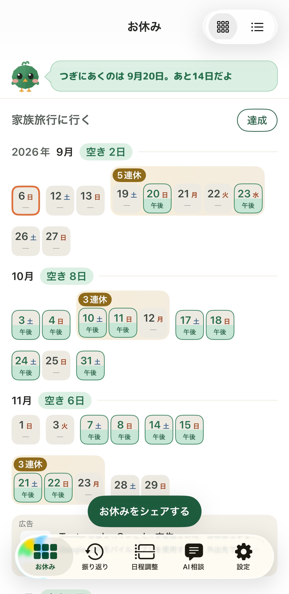
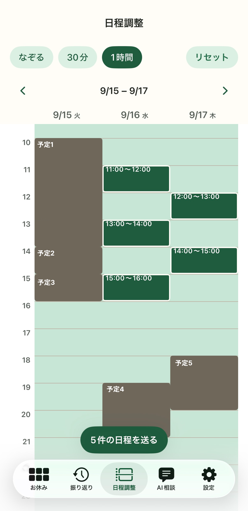
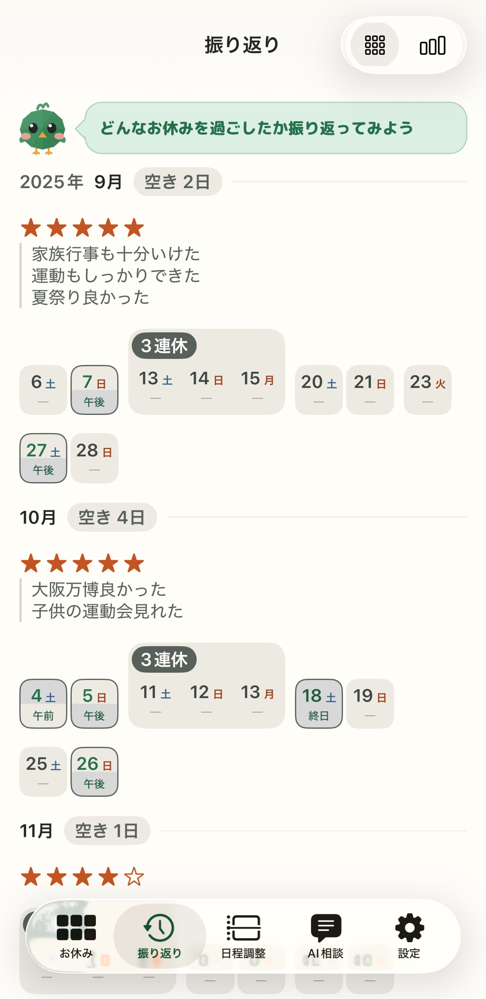
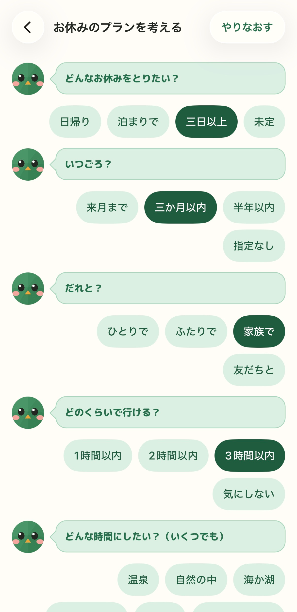
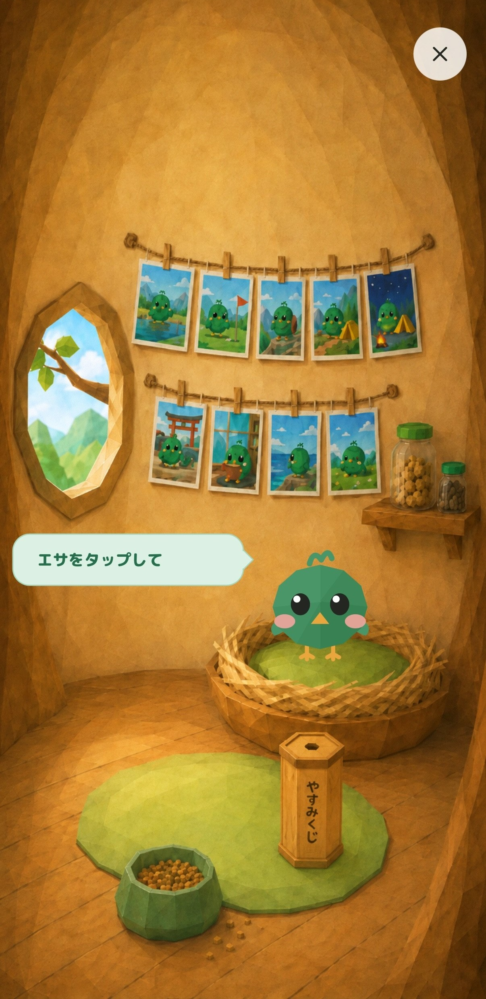

週末、空いてる日どこだっけ？
カレンダーの予定から、空いている土日祝をひと目で。調整できる時間はなぞって選ぶだけで、そのまま送れる文になります。
空いている土日祝と、連休が並びます。next の休みまであと何日かも、鳥が教えてくれます。
3日ぶんのカレンダーをなぞって、調整できる時間を選ぶ。そのまま送れる文になります。
どんなお休みだったかを、星とひとことで。写真も並びます。
土日祝を並べて、予定が入っていない日に色をつけます。連休はまとめて見えるので、旅行の計画も立てやすくなります。

3日ぶんのカレンダーを見ながら、空いている時間をなぞるだけ。「この日程だと調整できそうです」という文ができるので、コピーしてそのまま送れます。

その月のお休みがどうだったかを、星5つとひとことで残せます。あとから見ると、いい休みが続いた月と、そうでもなかった月が並びます。

「どんな休みにしたい？」「いつごろ？」「だれと？」に答えていくと、AIに渡す文ができます。できた文はコピーして、お使いの AI アプリに貼るだけです。

鳥にエサをあげたり、やすみくじを引いたり。旅の写真が、少しずつ壁に増えていきます。

予定名も、カレンダー名も、そこから数えた空き日数も、どこへも送りません。
カレンダーは読み取り専用で参照します。予定を書き換えたり、消したりすることはありません。
位置情報の許可を求めません。写真に付いている位置情報も読みません。
残すのは、あなたが決めたこと・書いたことだけ。続かなかった日数は数えません。
| 本体 | 無料（広告が表示されます） |
|---|---|
| 広告を消す | ¥300（買い切り） |
| やすみどりにチップ | ¥100 ／ 開発を応援するためのものです。アプリの機能は変わりません |